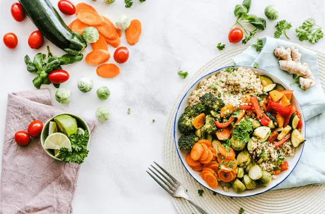
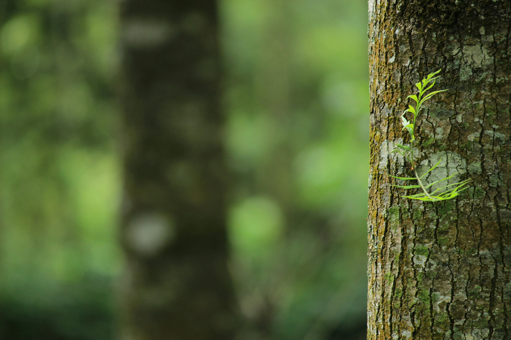

Step into a world of tranquility with this blog that uncovers the profound beauty
and therapeutic effects of connecting with nature. From lush green forests to the
gentle symphony of chirping birds and rustling leaves, it paints a vivid picture of
the calming embrace of the wilderness. Discover how immersing yourself in natural
landscapes can rejuvenate your mind, elevate your mood, and foster a deep sense of
inner peace. Explore tips for mindful walks, scenic escapes, and practices that
bring you closer to the earth, reminding us of the vital bond we share with the
natural world.
A Feast for the Senses
February 10, 2024 Daniel Cookswell
Get ready to tantalize your taste buds and ignite your culinary passion with this
vibrant blog that celebrates the art of cooking. Each post dives into a medley of
flavors, textures, and aromas from around the globe, showcasing diverse cuisines and
innovative recipes. With detailed step-by-step guides, pro tips, and stories behind
iconic dishes, it’s more than just a food blog—it's a journey through culture and
creativity. Whether you're a seasoned chef or a kitchen newbie, this blog will
inspire you to bring new energy and joy to your cooking adventures.
Travel Tales That Inspire
March 12, 2015 John Doe
Embark on a globe-trotting adventure with this blog, your guide to breathtaking
destinations and unforgettable journeys. From the hidden gems of quaint villages to
the dazzling energy of metropolitan cities, each post is a vivid travelogue designed
to spark your wanderlust. Learn tips for authentic travel experiences, discover
cultures beyond the guidebook, and find inspiration for your next adventure. Whether
you're dreaming of faraway places or planning your next getaway, this blog will
awaken the explorer in you.
An Excerpt from My Journal Entry (12.05.22)
May 4, 2023 Ink A Verse
While going through my old journal, I found a piece I had written almost exactly
last year. Thought I’d share it.
“…..Reading this only led me back to a question that I, like a million other people,
have been trying to find the answer to. Does the future already exist, or does it
change with every little movement?
I have read about people who, hours or even days before their deaths, knew that they
would die soon. My maternal grandma… ”
Unleashing Creativity Through Words
May 4, 2019 Howard Walowitz
Unleash your storytelling potential with this insightful blog dedicated to the art
of narrative. Dive deep into the elements of great storytelling, from building
unforgettable characters to crafting immersive worlds that captivate readers. Packed
with writing exercises, inspirational anecdotes, and guidance on finding your unique
voice, it’s the perfect resource for aspiring authors and seasoned storytellers
alike. Whether you’re writing a novel, screenplay, or personal essay, this blog will
help you turn ideas into stories that resonate with your audience.
A Touch Better
September 20, 2022 Scott Galloway
My next book, Adrift: America in 100 Charts, comes out September 20. It's a
narrative
told through charts.
“…. The world is significantly wealthier, freer, healthier, and better educated than
it
was forty years ago. In 1980, over 40% of humanity lived in extreme poverty. Today,
less than 10% does. In 1980, 44% of humanity had no democratic rights. Today, it is
less than 25%. A child born in 1980 had a life expectancy of 63 years. A child born
today should live a decade longer. In 1980, 30% of people fifteen years and older
had no formal education. By 2015, that share had been cut in half. … ”
Travel around the world
Step into a world of tranquility with this blog that uncovers the profound
beauty and therapeutic effects of connecting with nature. From lush green forests to the
gentle symphony of chirping birds and rustling leaves, it paints a vivid picture of the
calming embrace of the wilderness.
read more
Food
Get ready to tantalize your taste buds and ignite your culinary passion with this
vibrant blog that celebrates the art of cooking. Each post dives into a medley of
flavors, textures, and aromas from around the globe, showcasing diverse cuisines and
innovative recipes.
read more
My Favorite Reads
Food
Get ready to tantalize your taste buds and ignite your culinary passion with
this vibrant blog that celebrates the art of cooking. Each post dives into a
medley of flavors, textures, and aromas from around the globe, intertwining
diverse cultures and irresistible recipes.

Stories
Unleash your storytelling potential with this remarkable blog dedicated to
the art of travel tales. Dive deep into inspiring anecdotes and awe-inspiring
home-building unforgettable connections that captivate readers.
Nature
Step into a world of innovation with this blog that celebrates the profound
interplay of human creativity and the beauty of the natural world. From lush
landscapes to man-made wonders, each post brings you closer to the essence of
the wilderness.

Favorite Reads
Nature
From lush green forests to the gentle symphony of chirping birds and rustling
leaves, it paints a vivid
picture of the calming embrace of the wilderness.
Food
Detailed step-by-step guides, pro tips, and stories behind iconic dishes. It’s
more
than just a food blog—
it’s a journey through culture and creativity.
Stories
Dive deep into the elements of great storytelling, from building unforgettable
characters to crafting
immersive worlds that captivate readers.
Travels
Embark on a globe-trotting adventure with this blog, your guide to breathtaking
destinations and
unforgettable journeys.
My Favorite Reads
1. Wanderlust Chronicles Travel Tales That Inspire